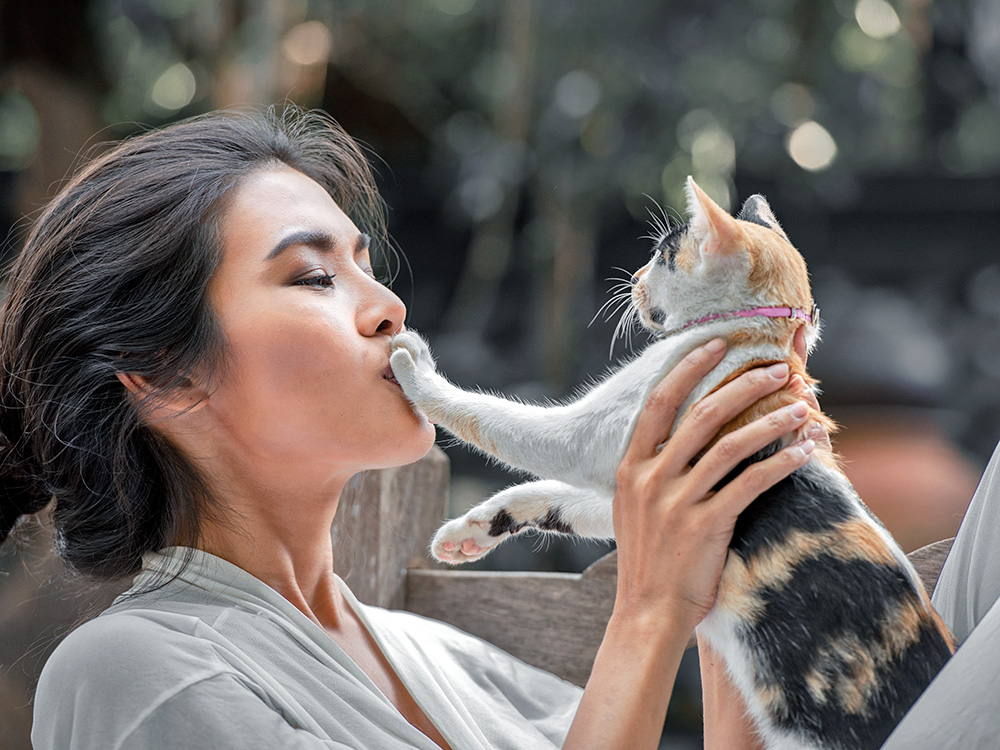

Many cats and dogs become homeless because they are abandoned, lost, neglected or surrendered by owners who are no longer able to care for them. Life on the street exposes animals to hunger, illness, injury, road accidents and cruelty.
PAWS provides shelter and care for unwanted and stray animals before helping suitable animals find new homes. However, reducing abandonment also requires responsible decisions from pet owners and support from the community.
Understanding the causes of abandonment can help prevent it.
Some owners move into homes that do not allow pets and abandon their animals instead of planning for suitable accommodation.
Food, vaccinations, medical treatment and daily care require long-term financial preparation.
Cats and dogs that are not neutered or spayed can reproduce, increasing the number of unwanted animals.
Some people adopt pets without understanding the time, patience and responsibility required for lifelong care.

Responsible Pet Ownership
Responsible ownership means providing suitable food, clean water, shelter, veterinary treatment, exercise, affection and a safe environment.
Neutering and spaying help prevent unplanned litters and reduce the number of unwanted animals entering shelters. PAWS vaccinates, deworms and neuters or spays animals before placing suitable pets for adoption.
It helps control the growth of the stray animal population.
The procedure may reduce certain health and reproductive risks.
Fewer unwanted animals means shelters can provide better care.
Do not leave the animal in danger. Provide temporary food, water and a safe space when possible. Contact the shelter before bringing an animal because admissions depend on shelter procedures and capacity.
PAWS advises people to call the shelter office before surrendering an animal. Surrender is permanent, and vaccination or neutering records should be brought when available.
Protecting animals begins with responsible actions.